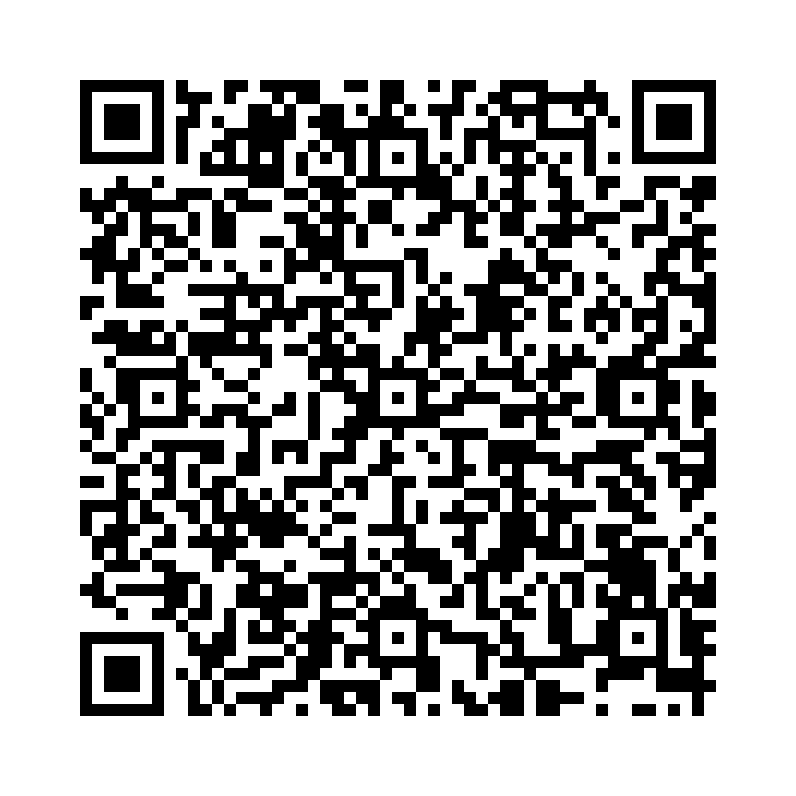

関係代名詞 目的格は、目的語の役割を果たし、文と文を結びつける働きをします。
次のような形で使います：
例文：
※1 以下の2文が1文になる。
目的語の"it"が省略されて関係代名詞"which"の先行詞"book"を修飾する。
The book is very interesting. I bought it. （その本はとても面白い。私はそれを買った。）
The book which I bought is very interesting. （その本、私が買った、はとても面白い。）
以下の単語を並べ替えて正しい文を作成しましょう。（和訳を参考にしてください）

問題1: (the book / bought / I / which / is / interesting / very) - 私が買った本はとても面白い。
解答: The book which I bought is very interesting。
解説: 目的格の関係代名詞 which を使用しています。
問題2: (that / we / watched / amazing / movie / the / was) - 私たちが見た映画は素晴らしかった。
解答: The movie that we watched was amazing。
解説: 目的格の関係代名詞 that を使用しています。
問題3: (I / like / which / the bag / is / red) - 私が好きなそのバッグは赤いです。
解答: The bag which I like is red。
解説: 目的格の関係代名詞 which を使用しています。
問題4: (that / he / gave / me / is / watch / the / broken) - 彼が私にくれたその時計は壊れています。
解答: The watch that he gave me is broken。
解説: 目的格の関係代名詞 that を使用しています。
問題5: (the song / that / love / we / singing / is / beautiful) - 私たちが歌うのが大好きなその歌は美しいです。
解答: The song that we love singing is beautiful。
解説: 目的格の関係代名詞 that を使用しています。